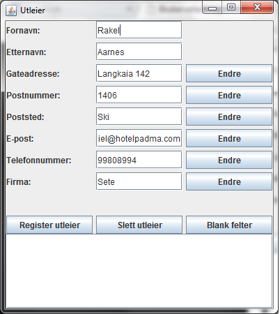
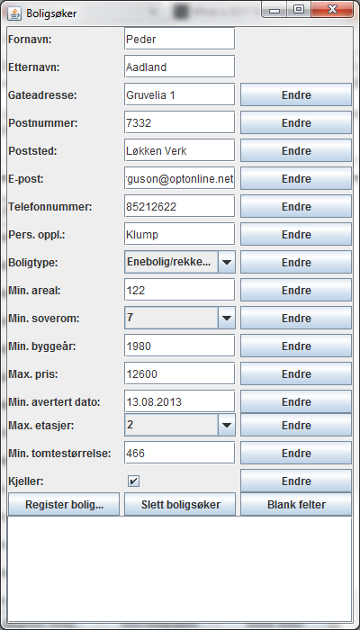
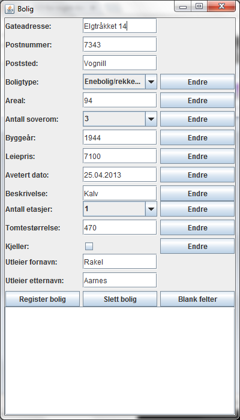
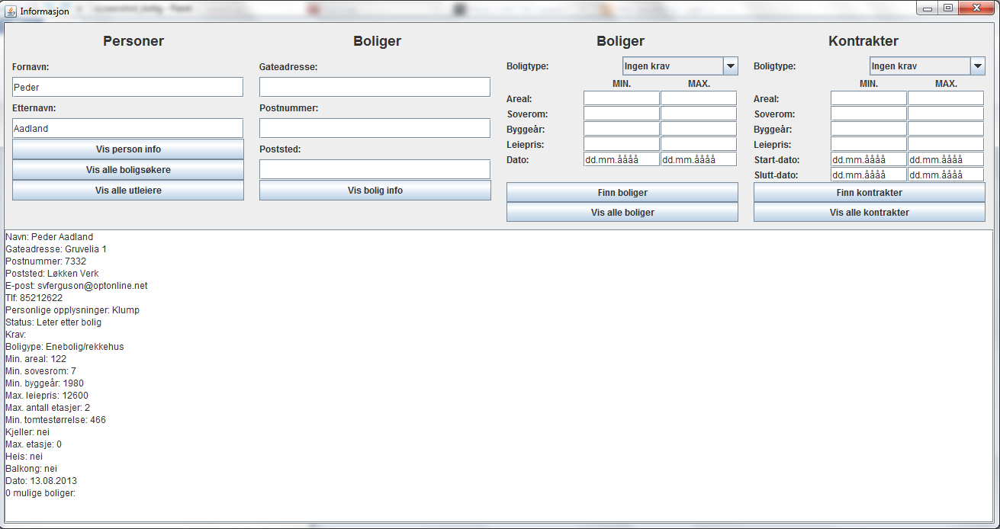

Brukerveiledning
Startvindu
I det du starter programmet så kommer du til startvinduet som består av 5 forskjellige knapper.- Utleier
- Boligsøker
- Bolig
- Kontrakt
- Informasjon

Utleier
Her vil du få opp et nytt vindu hvor du kan legge til, endre eller fjerne utleiere ved å skrive inn informasjonen som hører til utleieren. Når du trykker på knappen "Blank felter" så vil alle feltene bli blank og du kan skrive inn ny informasjon. NB! Utleier må registreres før en bolig kan registreres.
Når du skriver inn fornavn og etternavn så vil informasjonen som tilhører vedkommende bli fyllt inn automatisk i de resterende feltene.
Boligsøker
I dette vinduet registreres de som søker bolig. Her kan du også fjerne og endre på søkere. For å velge boligtype så trykker du på menyen der det står boligtype og du vil få opp to valg, enebolig og leilighet. Velger du en av de så ser du at du må skrive inn ekstra informasjon spesifisert for enten enebolig eller leilighet.
Det samme gjelder antall soverom. Trykk på drop-down menyen for å velge et minimum antall soverom.
Når du skriver inn fornavn og etternavn så vil informasjonen som tilhører vedkommende bli fyllt inn automatisk i de resterende feltene.
Bolig
I dette vinduet registreres det boliger knyttet til utleiere. Her vil du også se at ekstra informasjon må skrives inn etter valgt boligtype.
Når du her fyller ut gateadresse, postnummer og poststed så vil de resterende feltene bli fyllt inn automatisk.
NB! For at denne delen av programmet skal fungere så må det først registreres utleiere.
Viktig å fylle ut ALLE felter.
Kontrakt
Her kan du registrere og si opp kontrakter for salg av boligen ved å skrive inn informasjon om boligen, leietakeren og utleieren.
Når du her fyller inn de tre første feltene som er gateadresse, postnummer og poststed så vil all informasjonen om denne kontrakten bli fyllt inn automatisk.
NB! Kontrakter må registreres til sist

Informasjon
Her kan du finne all informasjon du er ute etter. Her kan du søke etter boliger, personer, kontrakter ved å skrive inn den informasjonen som trengs. Så vil det du søkte etter bli listet ut i utskrifts vinduet som er det store hvite feltet under knappene.
